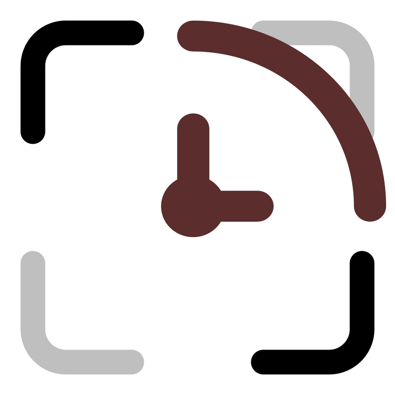

Fullscreen Time隐私政策 / Privacy Policy
1. 适用范围 / Scope
本隐私政策适用于“全屏时间显示”（Fullscreen Time）Chrome / Edge 扩展。本软件在视频全屏、浏览器全屏或非视频元素全屏时显示播放进度和系统时间。
This policy applies to the Fullscreen Time Chrome/Edge extension, which shows playback progress and the system clock while a video, the browser, or a non-video element is fullscreen.
2. 不收集的数据 / Data we do not collect
本软件不收集、不出售、不向开发者或第三方传输以下数据：
- 个人身份信息、联系方式、账号信息；
- 网页正文、表单内容、搜索记录、浏览历史；
- Cookie、广告标识符、设备标识符、IP 地址或位置信息；
- 视频文件、视频画面、音频或视频内容；
- 使用统计、崩溃日志或分析数据。
We do not collect, sell, or transmit personal data, page content, forms, browsing history, cookies, device identifiers, IP addresses, location data, video content, analytics, or crash logs.
3. 本地读取的数据 / Data read locally
为了在全屏时显示播放进度，本软件会在用户进入全屏播放期间读取当前页面中 <video> 元素的以下信息：
- 当前播放时间；
- 视频总时长（直播或未加载完成时可能不可用）；
- 当前系统时间。
这些信息仅在浏览器本地用于计算浮层显示内容，不会被上传、保存到开发者服务器或与第三方共享。
While a video is fullscreen, the extension reads the current playback time, duration (when available), and system time locally. These values are not uploaded, stored on a developer server, or shared with third parties.
4. 设置的保存与同步 / Settings and Chrome Sync
本软件使用 chrome.storage.sync 保存显示开关、布局模式与浮动位置、界面语言和快捷键绑定。如果用户登录 Chrome 并启用同步，这些设置可能通过 Google Chrome Sync 在登录同一账户的设备之间同步。
Chrome Sync 由用户账户与 Google 管理，开发者无法访问其中的数据。用户可以在 Chrome 同步设置中管理或清除这些数据；卸载扩展或清除扩展数据也会删除本地设置。
Settings (display options, layout, float positions, language, shortcut bindings) are stored in chrome.storage.sync. If Chrome Sync is enabled, settings may sync across devices signed into the same Chrome account. Chrome Sync is managed by the user and Google; the developer cannot access it.
5. 权限说明 / Permissions
- storage：保存上述设置 / saves the settings above.
- 所有网站的内容脚本 / content script on all sites：检测页面视频与全屏状态，以显示浮层；不读取或上传网页正文、表单、浏览历史或视频内容。Detects videos and fullscreen state; does not read or upload page text, forms, browsing history, or video content.
- all_frames / match_about_blank / match_origin_as_fallback：支持 iframe、frame、embed、object 中的播放器 / supports players inside frames and embeds.
- web_accessible_resources 的 _locales/*：内容脚本读取扩展本地语言包 / the content script loads local locale files.
- file:///*：支持本地视频文件全屏；用户需在扩展详情中手动允许访问文件网址 / supports local video files only when the user explicitly allows file URL access.
6. 第三方服务 / Third parties
本软件运行时不调用开发者服务器，不加载远程脚本，不集成第三方统计、广告或数据分析服务。Chrome Sync 属于浏览器提供的可选同步功能，受 Google 的隐私政策约束。
There is no developer server, remote code, advertising SDK, third-party analytics, or tracking script. Chrome Sync is an optional browser feature governed by Google's privacy policy.
7. 儿童隐私 / Children's privacy
本软件不面向儿童收集任何个人信息，也不包含广告或社交功能。
The extension does not collect personal information from children and contains no ads or social features.
8. 数据保留与删除 / Retention and deletion
本软件不保留开发者侧数据。设置保存在用户浏览器的 chrome.storage.sync 中；用户可通过 Chrome 同步设置清除，或通过卸载扩展删除本地数据。
No developer-side data is retained. Settings live in the user's browser storage and can be cleared through Chrome Sync settings or by uninstalling the extension.
9. 政策变更 / Changes
如果未来版本增加网络请求、数据处理或新的权限，我们会在扩展页面和本政策中明确说明，并在必要时更新版本号与生效日期。
If a future version adds network requests, data processing, or new permissions, the extension pages and this policy will be updated, along with the version and effective date where appropriate.
10. 联系方式 / Contact
如有隐私相关问题，请通过 GitHub Issues 提交：
https://github.com/mrchipset/fullscreen-time/issues
For privacy questions, please open an issue at the address above.